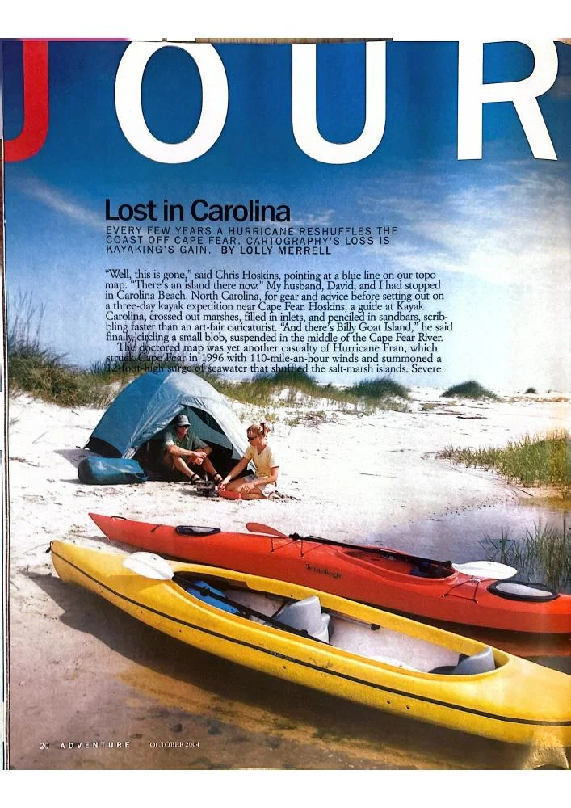

Lost in Carolina

A kayak expedition near Cape Fear, where hurricanes redraw the islands and inlets of the North Carolina coast.
View PDF here »PDF · 3.4 MB← Back to Travel and Adventure
A kayak expedition near Cape Fear, where hurricanes redraw the islands and inlets of the North Carolina coast.
View PDF here »PDF · 3.4 MB← Back to Travel and Adventure